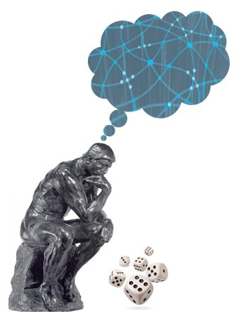

Homepage
Schedule
- Starts: 01/2012
Instructor
- Professor Daphne Koller joined the faculty at Stanford University in 1995, where she is now the Rajeev Motwani Professor in the School of Engineering. Her main research interest is in developing and using machine learning and probabilistic methods to model and analyze complex domains. Her current research projects span computational biology, computational medicine, and semantic understanding of the physical world from sensor data. She is the author of over 200 refereed publications, which have appeared in venues that range from Science to numerous conferences and journals in AI and Computer Science. She has given keynote talks at over 10 different major conferences, also spanning a variety of areas. She was awarded the Arthur Samuel Thesis Award in 1994, the Sloan Foundation Faculty Fellowship in 1996, the ONR Young Investigator Award in 1998, the Presidential Early Career Award for Scientists and Engineers (PECASE) in 1999, the IJCAI Computers and Thought Award in 2001, the Cox Medal for excellence in fostering undergraduate research at Stanford in 2003, the MacArthur Foundation Fellowship in 2004, the ACM/Infosys award in 2008, and was elected a member of the National Academy of Engineering in 2011. Daphne Koller is the founder and leader of CURIS, Stanford's summer research experience for undergraduates in computer science - a program that has trained more than 500 students in its decade of existence. In 2010, she initiated and piloted, in her Stanford class, the online education model that has led to the formation of the online courses that are being offered by Stanford to the general public.
Description
Uncertainty is unavoidable in real-world applications: we can almost never predict with certainty what will happen in the future, and even in the present and the past, many important aspects of the world are not observed with certainty. Probability theory gives us the basic foundation to model our beliefs about the different possible states of the world, and to update these beliefs as new evidence is obtained. These beliefs can be combined with individual preferences to help guide our actions, and even in selecting which observations to make. While probability theory has existed since the 17th century, our ability to use it effectively on large problems involving many inter-related variables is fairly recent, and is due largely to the development of a framework known as Probabilistic Graphical Models (PGMs). This framework, which spans methods such as Bayesian networks and Markov random fields, uses ideas from discrete data structures in computer science to efficiently encode and manipulate probability distributions over high-dimensional spaces, often involving hundreds or even many thousands of variables. These methods have been used in an enormous range of application domains, which include: web search, medical and fault diagnosis, image understanding, reconstruction of biological networks, speech recognition, natural language processing, decoding of messages sent over a noisy communication channel, robot navigation, and many more. The PGM framework provides an essential tool for anyone who wants to learn how to reason coherently from limited and noisy observations.
Provides
- the basics of the PGM representation
- how to construct them using
- human knowledge
- machine learning techniques
- algorithms
- to reach conclusions from limited and noisy data
- for making good decisions under uncertainty
- theoretical underpinnings of the PGM framework
- practical skills needed to apply these techniques to new problems
- The Bayesian network and Markov network representation
- extensions for reasoning over domains that change over time and over domains with a variable number of entities
- reasoning and inference methods
- exact inference (variable elimination, clique trees)
- approximate inference (belief propagation message passing, Markov chain Monte Carlo methods)
- learning methods for both parameters and structure in a PGM
- using a PGM for decision making under uncertainty
- case studies and applications
- computer vision
- text understanding
- medical decision making
- speech recognition
- and many other areas